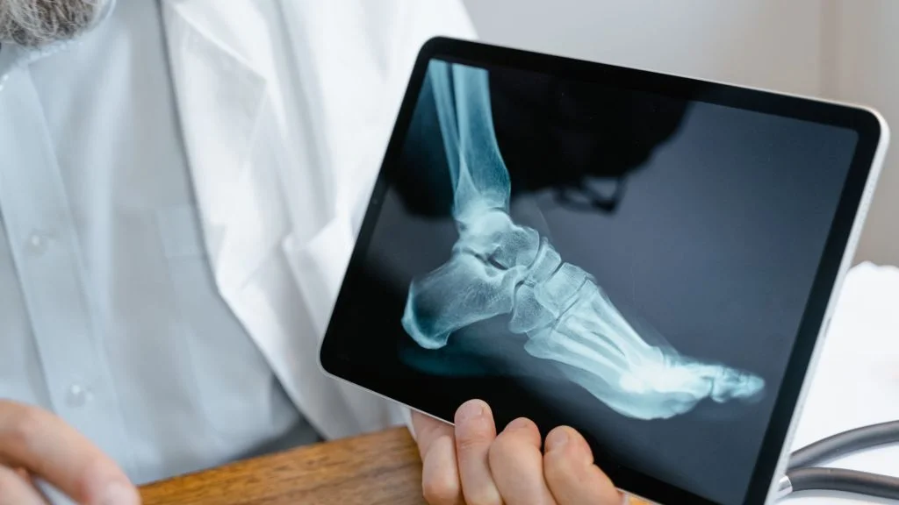

MBBS, MS - Orthopedic
M.CH-(Ortho) Joint Replacement surgeon
Bone Health and Nutrition: Essential Nutrients for Stronger Bones
Bone health is crucial for our general body well-being since bones are essential for giving structure to the body, protecting various organs, anchoring muscles, and storing critical minerals. A healthy skeletal system allows us to live long, active, and mobile lives.
For this to happen, we need to have a balance of nutrition and regular exercise in addition to lifestyle habits that minimize bone loss. In this article, we will look at the key nutrients that are essential for optimal bone health and how each plays a role in maintaining strength and resilience throughout the lifespan.
1. Introduction to Bone Health
Bones are alive, constantly undergoing remodeling, breakdown and rebuilding. The rate of rebuilding is higher than breakdown in youth. Therefore, if remodeling rates decrease over time, bone density is gradually lost.
Natural bone loss is compounded by other factors, for example, hormonal changes, lifestyle, and diet, to cause osteoporosis and breakage of bones. There may be a postponement or even prevention of these conditions for those building and maintaining bone mass at an early age because of nutrition and lifestyle habits.
Key nutrients support the process of forming the structure of bones, which the body will maximize in storing and using calcium, both necessary components in building resilience and keeping fractures at bay.
2. Calcium: The Building Block of Bones
Calcium is one of the primary minerals in the bones, accounting for a significant portion of bone tissue. It provides structural strength and rigidity, playing an essential role in bone formation and health.
Recommended Intake: Adults typically need around 1,000 mg per day, with the requirement increasing to 1,200 mg per day for women over 50 and men over 70 due to accelerated bone loss in older age.
Sources: Dairy products like milk, yogurt, and cheese are well-known sources of calcium. However, leafy green vegetables (such as spinach and kale), almonds, tofu, and fortified foods like orange juice and cereals are also excellent options.
While calcium intake is critical, our bodies can only absorb a certain amount at once, so it's best to consume calcium-rich foods throughout the day to maximize absorption.
3. Vitamin D: The Key to Calcium Absorption
Vitamin D is essential so that the body can ingest calcium. If there were no vitamin D, this could not absorb calcium either and the bones begin giving away, weakening the skeleton to be brittle.
Recommended intake: It is some 600 IU a day for most adults and at an intake of 800 IU per day in over seventy.
Sources: The most natural source of vitamin D is sunlight, as our skin synthesizes it when exposed to UV rays. Other sources include salmon, tuna, mackerel, fortified milk, and eggs. Supplementation is also recommended, especially in areas with limited sunlight.
Vitamin D deficiency is ubiquitous, but most commonly observed in elderly individuals and people with little sun exposure. Thus, the need for regular monitoring and supplementation if the deficiency exists is necessary.
4. Magnesium: A Support for Bone Density
Magnesium is another mineral that plays a critical role in bone health by aiding in calcium absorption and promoting bone density. Nearly 60% of the body's magnesium is stored in the bones, and it contributes to the mineralization of the skeletal system.
Recommended Intake: Adult men should aim for 400–420 mg daily, while women need about 310–320 mg.
Sources: Nuts, seeds, leafy green vegetables, whole grains, and legumes are all rich in magnesium. Avocados and dark chocolate are also good sources, adding variety to bone-strengthening diets.
Magnesium also helps regulate vitamin D activity, making it a crucial partner in bone health. A deficiency in magnesium has been linked to bone density issues and even osteoporosis in severe cases.
5. Phosphorus: A Partner to Calcium
Phosphorus works hand-in-hand with calcium to form hydroxyapatite, the main structural component of bones and teeth. This mineral is crucial for both the formation and maintenance of bone mass.
Recommended Intake: The recommended daily intake is 700 mg for adults.
Sources: High-protein foods like meat, poultry, fish, dairy products, nuts, seeds, and whole grains are excellent sources of phosphorus.
Though phosphorus is abundant in the diet and deficiencies are rare, an imbalance where phosphorus levels exceed calcium can lead to bone issues. For this reason, a balanced intake is crucial.
6. Vitamin K2: The Bone Mineralization Helper
Vitamin K2 aids in the binding of calcium to the bone matrix, contributing to mineralization. It works by activating osteocalcin, a protein that helps incorporate calcium into the bone. Without adequate vitamin K2, calcium may accumulate in the arteries rather than the bones, leading to potential cardiovascular issues.
Recommended Intake: The recommended intake is 90–120 mcg for adults.
Sources: Vitamin K2 is found in fermented foods like natto (fermented soybeans), certain cheeses, and animal products such as liver, meat, and eggs.
For those not consuming a lot of animal products, getting sufficient K2 from the diet alone can be challenging, making supplements a viable option.
7. Protein: Building and Repairing Bone Structure
Protein is essential for bone repair and renewal, as about one-third of bone mass is made up of protein collagen, providing flexibility and shock absorption. Low protein intake can weaken bones and increase the risk of fractures, especially in older adults.
Recommended Intake: Protein requirements vary by age and activity level but generally fall around 46 grams per day for women and 56 grams for men.
Sources: Protein-rich foods include lean meats, poultry, fish, eggs, dairy, legumes, nuts, and seeds.
Too much protein, however, can increase calcium loss in urine, so a balanced intake is essential for bone health.
8. Vitamin C: A Collagen Builder for Bone Flexibility
Vitamin C is well-known for supporting immune function, but it also plays a significant role in bone health by stimulating collagen synthesis. Collagen is the protein matrix within bones that provides flexibility and helps prevent fractures.
Recommended Intake: Men should aim for 90 mg daily, while women should get around 75 mg.
Sources: Citrus fruits, strawberries, bell peppers, broccoli, and kiwi are all rich in vitamin C.
Adequate vitamin C intake is particularly important in older adults, as collagen production declines with age, increasing the risk of fractures.
9. Zinc: Essential for Bone Growth and Remodeling
Zinc is a trace mineral that promotes bone growth and assists in bone remodeling by stimulating osteoblasts. Osteoblasts are the cells responsible for building bone. It also inhibits the breakdown of bone tissue by osteoclasts.
Recommended Intake: Adult men need about 11 mg daily, while women require 8 mg.
Sources: Meat, shellfish, legumes, nuts, seeds, and whole grains are rich in zinc.
While the body only needs small amounts, zinc deficiency can contribute to bone loss, especially in older adults.
10. Omega-3 Fatty Acids: Reducing Inflammation for Bone Health
Omega-3 fatty acids are anti-inflammatory agents, which reduce inflammation and weaken the bones. Chronic inflammation will lead to an unbalanced bone remodeling process as the bone loss is facilitated rather than bone formation.
Recommended Intake: There is no specific recommended intake for omega-3s, but consuming 250–500 mg of combined EPA and DHA is beneficial for general health.
Sources: Fatty fish like salmon, mackerel, sardines, flaxseeds, chia seeds, and walnuts are rich sources of omega-3s.
Omega-3s support overall joint and bone health, and including them in the diet may reduce the risk of osteoporosis.
Additional Lifestyle Tips for Bone Health
- Engage in Weight-Bearing Exercises: Activities like walking, jogging, and resistance training stimulate bone growth and slow age-related bone density loss.
- Limit Caffeine and Alcohol: Excessive caffeine and alcohol can interfere with calcium absorption and bone density.
- Avoid Smoking: Smoking accelerates bone loss and hinders calcium absorption.
Conclusion
Calcium, vitamin D, magnesium, phosphorus, and other nutrients are involved in different, sometimes synergistic, ways in maintaining healthy bones and bones with advancing age. The building and maintenance of bone strength involve a lifetime effort to maintain a proper diet with regard to these nutrients and healthy lifestyles.
Frequently Asked Questions (FAQs)
How can I make my bones stronger?
Include physical activity in your everyday routine. Walking, running, and climbing stairs are all weight-bearing workouts that can help you grow strong bones and slow down bone loss. Stay away from drugs and alcohol. Do not smoke.
What fruit is best for bones?
If you're looking for bone-building fruits, figs should be at the top of your shopping list. Five medium fresh figs provide around 90 milligrams of calcium and other skeleton-saving minerals such as potassium and magnesium.
What is the best superfood for bones?
Dark green leafy vegetables include kale, collard greens, spinach, mustard greens, turnip greens, and Brussels sprouts. Certain kinds of juice, breakfast items, soy milk, rice milk, cereals, snacks, and breads may include calcium and vitamin D.